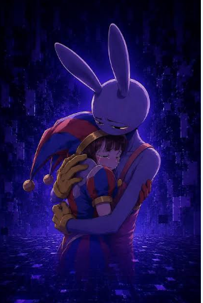

☠ GRAND LINE
🌀 INSISTE

Te rindas hoy o te rindas mañana...😈 todos los caminos posibles terminan en ti, estas destinada a ser mia para siempre.
El Grand Line no acepta un “no” tan fácil... 🌊 ¿Qué tal si le das otra oportunidad al destino?